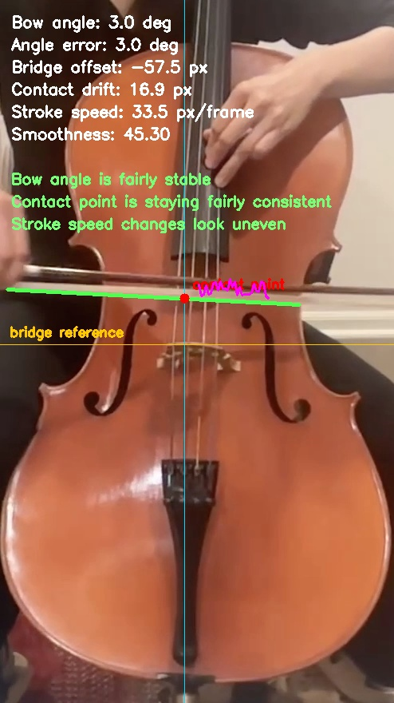
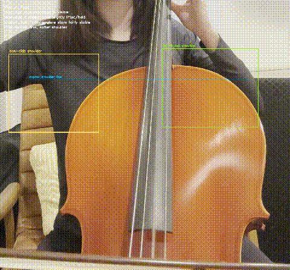
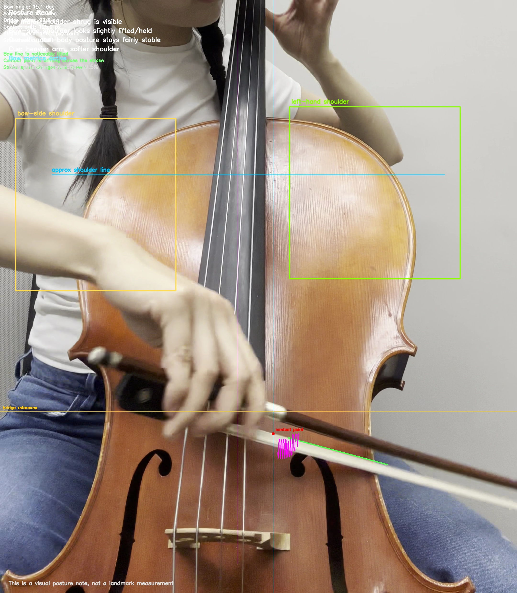
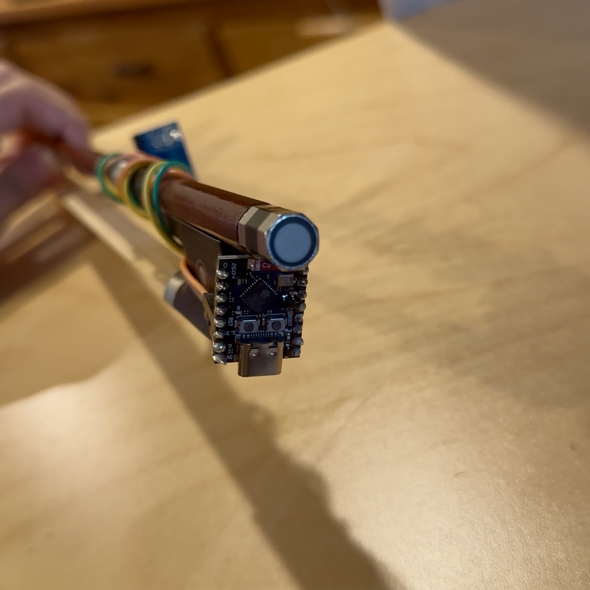

A vision and embedded-sensing toolkit that turns bowing motion, posture, and early technique signals into measurable metrics and live feedback — webcam first, optional bow-mounted IMU second.
Beginners raise the shoulder and drift the bow without ever seeing it.
Stiff wrists, a lifted bow-side shoulder, a stroke that wanders off straight — these happen below a player's awareness. This project converts them into motion metrics and an overlay you can actually watch, so the correction has something to point at.
Computer vision for human-movement tracking
Geometry-based technique metrics
Musician-focused feedback loops
A clean path to real-time and embedded deployment
An optional IMU extension for sensor fusion
A desktop IMU Studio for capture, labeling, and 3D motion
In this first version
01
Pose landmarks
Tracks right shoulder, elbow, and wrist with MediaPipe Pose.
02
Bow-arm angle
Estimates the arm angle from elbow to wrist, frame by frame.
03
Wrist path
Records the wrist trajectory over time to expose drift.
04
Shoulder elevation
Measures rise above a relaxed neutral baseline.
05
Motion smoothness
Estimates jerk from changes in stroke velocity.
06
Live overlay
Renders technique feedback straight onto the video.
07
Webcam or file
Runs on a live camera or a recorded clip, with optional saved output.
08
Clip analyzer
A single tool for bow, posture, or combined feedback.
09
IMU Studio
Desktop capture: serial connect, labeling, CSV, live 3D motion.
Example outputs
Sample frames from real clips.
Reference frames showing how the analyzer adapts to different camera angles and visible technique cues.

sample frame
bow_metrics_sample.jpg
Bow-angle, bridge-offset, contact-point, and smoothness overlay.

sample frame
posture_fallback_demo.gif
Automatic posture fallback when bow tracking is unreliable.

sample frame
combined_sample.jpg
Combined posture + bow analysis.
How the metrics work
Four signals, each one geometry you can read off the frame.
If a clip can't support confident bow tracking, the analyzer falls back to posture-only feedback instead of forcing noisy numbers. Here's the math behind each signal — exactly what the overlay above is computing.
Shoulder elevation posture
The vertical rise of the bow-side shoulder above a relaxed baseline. In clips where the shoulder is visible, the analyzer flips into a posture overlay and flags tension cues; right now it's a visual coaching layer rather than a full landmark measurement.
For bow-visible clips, the analyzer fits the bow line and reports how far it drifts from a flatter stroke. angle_error_deg is the absolute deviation from that reference direction.
The bow demo trails the contact point where the stroke crosses the strings — making drift, direction, and consistency visible frame to frame. The contact point is the intersection of the bow line with the string-center reference; drift is measured against the first stable point.
python
t = (string_center_x - x1) / (x2 - x1)
contact_y = y1 + t * (y2 - y1)
if contact_baseline_y isNone:
contact_baseline_y = contact_y
contact_drift = contact_y - contact_baseline_y
Motion smoothness bow
Estimated from how much stroke speed fluctuates over time. Large swings read as jerky bowing; steadier values read as a smooth stroke. Lower σ is better.
A bow-mounted sensor, only once vision hits its limit.
The core repo works with no special hardware. The optional path mounts an ESP32-C3 SuperMini and a small inertial sensor on the bow to add roll, angular velocity, and jerk — fused with the video metrics rather than replacing them.
side view
prototype side.jpeg

back view
prototype_back.jpeg
Bow-mounted prototype — IMU + ESP32-C3 ride directly on the bow.
PROTOTYPE · ESP32-C3 + IMU · SCHEMATIC
Schematic — both IMU and microcontroller ride on the bow.
The desktop companion treats the bow like a capture subject: connect, name a session, label takes for different gestures, and record to CSV — with live plots and a 3D acceleration-space view alongside.
▸Live serial connection to the ESP32-C3
▸Session naming and note-taking
▸Take labeling for different bowing gestures
▸CSV recording for later analysis
▸Live acceleration and gyro plots
▸Live 3D acceleration-space visualization
The 3D panel shows the changing ax, ay, az vector in space — useful for intensity and direction. Not yet a full reconstructed bow-position tracker.
ACCELERATION-SPACE · ax / ay / az
Illustrative — the live vector swings with motion intensity.
Python compatibility. The prototype targets the classic MediaPipe solutions API, so Python 3.10–3.12 is safest. On 3.14, pip install mediapipe ships the Tasks-oriented layout, which omits mediapipe.solutions and stops the tracker from starting. For the macOS IMU viewer, 3.12 is also recommended — the PySide6 stack is more reliable there.
Compare a student recording against a reference performance
→ 06
Deploy on Jetson with low-latency camera capture
→ 07
Add the ESP32 + IMU path for orientation and smoothness sensing
Research context
Grounded in prior bow-sensing work — mostly violin, treated as a starting point.
Most directly relevant literature studies violin rather than cello, so these are strong references rather than one-to-one validation for cello technique.
IMU vs MOCAP
A Machine Learning Approach to Violin Bow Technique Classification
Dalmazzo, Tassani & Ramírez
A professional violinist performed détaché, martelé, spiccato, and ricochet, captured by both high-precision MOCAP and a low-cost Myo armband. The Myo-based classifier slightly edged out the MOCAP one — useful feedback may not need expensive capture if the features are discriminative enough.
Rethinking Instrumental Interface Design: The MetaBow
Alonso Trillo, Nelson & Michailidis
Argues interface design is the real bottleneck: a device can produce good data yet fail if it's bulky or alters bow balance. MetaBow preserves traditional mechanics and frames a measurement space — speed, tilt, location, force, bridge distance, inclination, finger pressure — that maps cleanly onto this project's direction.